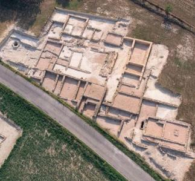
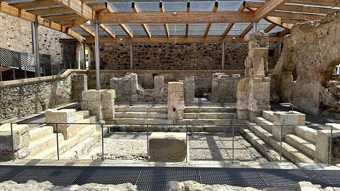

|
GIRONA ROMANA
- Ampurias - Lloret de Mar tiene 3 poblados íberos, Montbarbat, Puig de Castellet y Turó Rodó. El sepulcro Romano data de la segunda mitad del siglo II. - El catellum fractum de Sant Julià de Ramis. En septiembre de 2025, los arqueólogos de la Universidad de Girona (UdG) han localizado la plataforma de un antiguo templo romano en el yacimiento de los Santos Médicos de Sant Julià de Ramis, en el Gironès. Según los investigadores, la estructura se construyó entre los años 130 y 120 a.e.c. sobre los restos de un poblado ibérico. - La villa romana del Collet de Sant Antoni Calonge. Habitada del Siglo I a.e.c al IV. Perteneció al propietario de una alfarería dedicada a la fabricación de ánforas para el transporte y comercialización de vino. Se han recuperado varias estancias, un horno y restos de ánforas. En 2016, se recubrieron restos de mosaicos. En febrero de 2021, hallan depósitos y más restos cerámicos. - La villa romana de Vilauba, en Banyoles.
 - La villa de Guissona, la antigua ciudad de IESSO que fue fundada hacia el año 116 a.e.c. - La torre sepulcral romana de Vilablareix. - En Camós, en julio de 2020, Las excavaciones arqueológicas llevadas a cabo este año en el pozo de la villa romana de Vilauba han descubierto una pala de madera y un zapato entero -que aún conserva los cordones y las correas para fijarla en los tobillos-, además de otros utensilios cotidianos del siglo V y VI. También han encontrado en otra zona del yacimiento restos óseos que pertenecen a bueyes de entre 4 y 5 años de edad y que fueron sacrificados a finales del siglo I. - La villa Romana del Pla de Palol, de Platja d'Aro, data del siglo I a.e.c y que subsistió hasta siglo VI. - En mayo de 2022, la campaña de excavación del yacimiento romano de los Padrets de Blanes en Selva, ha permitido descubrir dos islas de casas romanas del siglo I. Los arqueólogos encuentran restos cerámicos, ánforas, herramientas de metal y cosas de cristal entre las edificaciones. - La torre de vigilancia romana de La Torrassa del Moro en Llinars. - En Caldes de Malavella los romanos fundaron Aquae Calidae. Las termas romanas datan de mediados del siglo I. Se pueden observar los mecanismos de funcionamiento de agua casi intactos. El edificio consta de una piscina central y una serie de habitaciones alrededor para recibir tratamientos curativos. Hay tres espacios en la parte trasera donde se usaban aceites. Vinculadas al culto probablemente a Apolo o a alguna otra divinidad curativa de enfermedades. En Caldes de Malavella tambien destaca el Camp dels Ninost. En marzo de 2018, unos restos arqueológicos localizados confirman la presencia de un asentamiento romano entre los siglos II a.e.c y II. Según informa el Ayuntamiento, la ciudad sería Aquae Calidae, de la que se habían encontrado indicios como la necrópolis o las termas, pero nunca se había demostrado la existencia de un núcleo urbano.

|